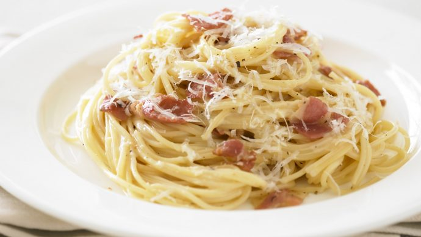

How to make Carbonara: a guide.

Description
If you've read our recipe on how to make lasagna, you know that on Odin Recipes we're some Italian food lovers ! And here's our favourite Carbonara recipe for all our students that love some cream in their pasta!
You may call us bad names, but the cream is going in *thumbs up*.
Ingredients
You'll need:
- Cream
- One egg
- Pasta
- Some diced bacon
- Salt & Pepper
- Cheese (Parmesan or Emental)
Steps
- Put some water to boil in a large pan with salt
- Put a frying pan to heat
- When the water starts boiling, add your pasta to the large pan
- Add your diced bacon to the frying pan and stir for it not to burn
- When the bacon is well cooked and brown, add some cream to it with pepper
- Take your pasta out of the pan when they are cooked and put them into the cream
- Break an egg in it and mix and add your parmesan if it's the cheese you chosed
- Put the pan's content in a plate
- Put some more cheese and black pepper on top
- And finally, enjoy !
Return to Menu